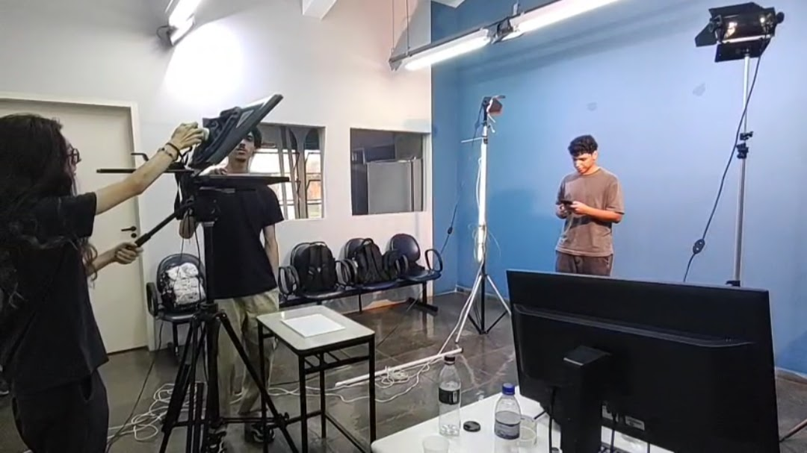
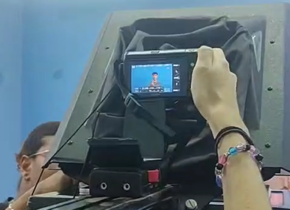
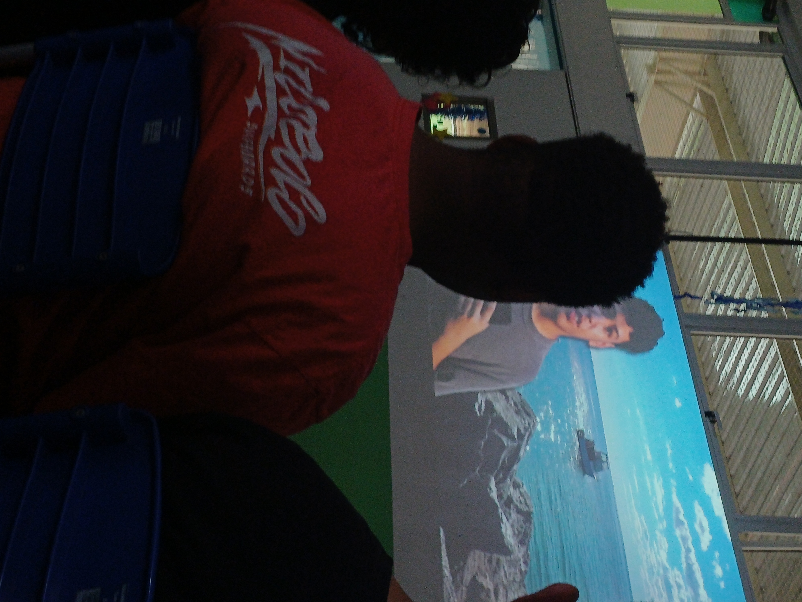

05 — Galeria
Imagens do Projeto
Registros das etapas de criação do vídeo e momentos de apresentação.




Portfólio Educacional · 2025
Uma oficina que aborda todas as etapas da criação de vídeos sobre educação marinha
01 — Descrição
O projeto "Cultura Oceânica: Oficina de Microvídeos" aborda todas as etapas da produção de vídeo de maneira simples e didática para os alunos, que ao fim são apresentados um exemplo de vídeo em formato documental que traz uma reflexão sobre a vida marinha, suas ameaças e o nosso papel na sua preservação.
02 — ODS
O projeto se articula com múltiplos ODS da Agenda 2030 da ONU, contribuindo para metas globais de educação, conservação marinha e ação climática.
Conscientização sobre conservação e uso sustentável dos oceanos e recursos marinhos.
Promoção de aprendizagem inclusiva, equitativa e de qualidade para todos os estudantes.
Fortalecimento da resiliência e da capacidade adaptativa às mudanças climáticas.
Fortalecimento dos meios de implementação e revitalização da parceria global.
03 — BNCC
O projeto está alinhado a competências e habilidades da BNCC, promovendo aprendizagens integradas entre Ciências da Natureza, Língua Portuguesa, Arte e Tecnologia.
EF07CI08 / EF07CI09 / EF07CI11
Identificar relações entre os componentes bióticos e abióticos dos ecossistemas, especialmente marinhos, bem como a aplicação da tecnologia nos contextos ambientais e de qualidade de vida.
EF08CI16
Discutir iniciativas que contribuam para restabelecer o equilíbrio ambiental a partir da identificação de alterações climáticas regionais e globais provocadas pela intervenção humana.
EF09CI12 / EF09CI13
Compreender a importância das unidades de conservação para a preservação da biodiversidade e utilizar a produção de conteúdo midiático para a solução de problemas ambientais.
EF69LP01 ao EF69LP10
Identificar em noticias as suas principais circunstâncias e eventuais decorrências, analisar efeitos de sentido que fortalecem a persuação e aplicar tais conhecimentos através da produção de textos (roteirização) e publicação de conteúdo midiático (reportagens, notícias, entrevistas, etc.)
EF69AR03 / EF69AR04 / EF69AR06
Analisar a maneira que as linguagens das artes visuais se integram às linguagens audiovisuais e entender seus processos construtivos, afim de se desenvolver processos de criação em artes visuais utilizando materiais, instrumentos e recursos digitais.
EF69AR35
Identificação de manipulação da tecnologia e de recursos digitais para a produção de práticas e repertórios artísticos de maneira consciente, ético e responsável.
Como expresso na BNCC (pág. 473 - 475), a preocupação com os impactos das transformações ocasionadas pela tecnologia na sociedade estão explíticas em diversas áreas, já se iniciando nas competências gerais para a Educação Básica e se tornando imprescindível a ampliação de tais etapas durante o Ensino Médio, dada a intrínseca relação entre as culturas juvenis e a cultura digital. Dessa forma, o projeto apresentado auxilia os estudantes a desenvolverem as seguintes habilidades:
Envolve as capacidades de compreender, analisar, definir, modelar, resolver, comparar e automatizar problemas e suas soluções, de forma metódica e sistemática, por meio do desenvolvimento de algoritmos.
Envolve as aprendizagens relativas às formas de processar, transmitir e distribuir a informação de maneira segura e confiável em diferentes artefatos digitais – tanto físicos (computadores, celulares, tablets etc.) como virtuais (internet, redes sociais e nuvens de dados, entre outros) –, compreendendo a importância contemporânea de codificar, armazenar e proteger a informação.
Envolve aprendizagens voltadas a uma participação mais consciente e democrática por meio das tecnologias digitais, o que supõe a compreensão dos impactos da revolução digital e dos avanços do mundo digital na sociedade contemporânea, a construção de uma atitude crítica, ética e responsável em relação à multiplicidade de ofertas midiáticas e digitais, aos usos possíveis das diferentes tecnologias e aos conteúdos por elas veiculados, e, também, à fluência no uso da tecnologia digital para expressão de soluções e manifestações culturais de forma contextualizada e crítica.
04 — Produção
O processo de desenvolvimento de um vídeo é composto por etapas estruturadas que garantem a clareza e a qualidade do material final. Este fluxo de trabalho é dividido em quatro fases principais: pesquisa, roteirização, produção e edição.
A pesquisa é a base do projeto. Nesta etapa preliminar, o foco é a coleta de informações sobre o tema escolhido e a definição do objetivo do vídeo. É necessário compreender o público que assistirá ao material para adequar a linguagem e a profundidade do conteúdo. A importância da pesquisa reside em evitar informações incorretas e garantir que o vídeo tenha um propósito claro. Sem esta fase, as etapas seguintes perdem direcionamento.
Com as informações reunidas, inicia-se a roteirização. O roteiro é o documento que organiza o conteúdo da pesquisa em uma sequência lógica. Ele descreve não apenas o que será dito ou narrado, mas também o que será visto na tela em cada momento. Esta etapa funciona como um guia do projeto. A roteirização é fundamental porque previne improvisações desnecessárias e otimiza o tempo nas fases seguintes, conectando a ideia abstrata da pesquisa com a execução prática.
A produção é o momento de captar ou gerar os elementos visuais e sonoros definidos no roteiro. Dependendo da natureza do projeto, isso envolve a gravação de imagens com câmeras, a captação de voz, a preparação de cenários ou a criação de elementos gráficos. A fluidez desta etapa depende diretamente do detalhamento feito na roteirização. A produção fornece a matéria-prima bruta que será lapidada posteriormente, servindo como a execução física ou técnica do planejamento.
A edição, também conhecida como pós-produção, é a etapa de montagem. O material bruto captado na produção é selecionado, cortado e organizado em uma linha do tempo, seguindo estritamente a estrutura ditada pelo roteiro. Neste momento, adicionam-se elementos complementares, como trilha sonora, efeitos visuais, textos na tela e correção de cor e áudio. A função da edição é dar ritmo ao vídeo, eliminar falhas e garantir que a mensagem original seja transmitida de forma contínua ao espectador.
O fluxo de trabalho funciona em cadeia, onde cada fase depende da conclusão adequada da anterior. A pesquisa sustenta o roteiro, o roteiro direciona a produção, e a produção entrega o material necessário para a edição. O cumprimento dessas etapas permite que uma ideia seja transformada em um vídeo estruturado de maneira lógica e funcional.
05 — Galeria
Registros das etapas de criação do vídeo e momentos de apresentação.



06 — Demonstração
Assista ao vídeo de exemplo que foi apresentado em sala e conheça o resultado obtido aplicando as metodologias ensinadas no projeto, desde a concepção do roteiro até a publicação final.
↓ Baixar apresentação